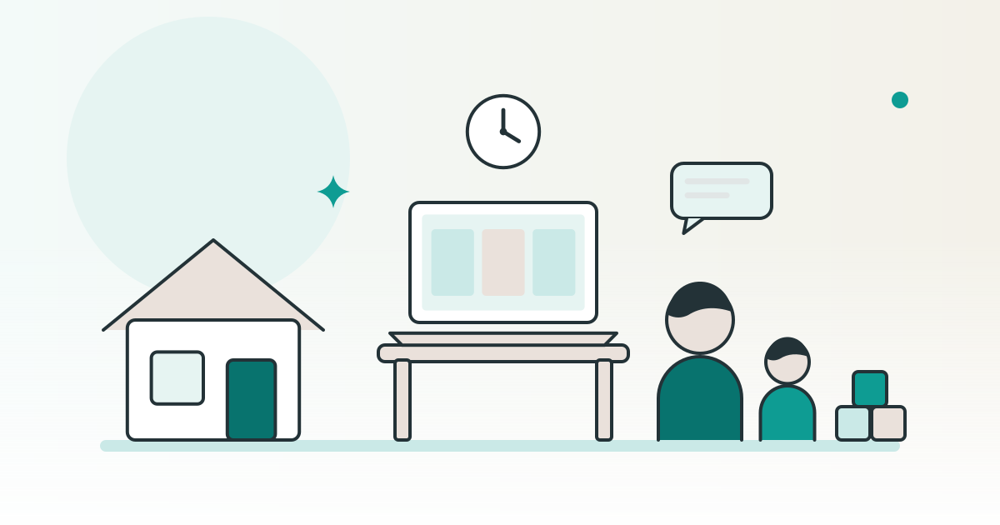

SHOPKIT コラム
専業主婦が在宅で副業を始める前に家族と決めること・確かめる窓口

専業主婦が在宅で副業を始めるなら、家族と使える時間・場所・支出の出どころを決め、税や年金について聞く先をそろえるところから始めましょう。仕事の名前だけで選ばず、連絡を受けられる時間と、手を動かせる時間を分けます。この記事では、家で仕事を請ける場合と、自分で商品を売る場合を並べ、始める前の取り決めを整理します。
この記事は、完成品のネットショップを販売している SHOPKIT が書いています。
この記事で分かること
- 仕事を請ける形と、自分で売る形で決めておくこと
- 家族と時間・場所・支出を話し合うためのメモ
- 税や年金の確認先と、小さく試すときの進め方
在宅の副業は、仕事を請ける形と自分で売る形を分ける
最初に、相手から頼まれた仕事を受けるのか、自分で商品やサービスを用意して売るのかを決めます。以下は仕事を選ぶための一般的な整理です。契約や税の区分を一律に決める表ではありません。
| 考える形 | 始める前に読むこと | 自分が決めること |
|---|---|---|
| 家で仕事を請ける | 仕事内容、納める物、締切、報酬の条件、連絡が必要な時間帯。 | 受ける範囲と量、作業できない日の扱い。 |
| 自分で商品を売る | 仕入れ、商品説明、支払い、配送、問い合わせまでの流れ。 | 扱う商品、注文に対応する時間、支出の上限。 |
| 自分の得意なことを提供する | 相手が求める内容、提供する場所や方法、変更や取り消しの条件。 | 提供する範囲、予約や連絡の受け方、休む日の案内。 |
例えば自分で売る形なら、商品を選ぶ時間だけでなく、注文や質問が届いた後の対応も予定に入れます。家にいる時間のすべてを、仕事に使える時間として数えないようにしましょう。
関連：在宅で起業するには｜主婦・ママが家で小さく始める事業の選び方
家族とは、時間帯・場所・支出を具体的に話す
「家で働く」という希望を、生活の中の取り決めに置き換えます。集中して作業する時間、家族が同じ場所を使う時間、途中で止める可能性のある用事を書き出してください。家族にも予定を見てもらい、無理な前提がないか話し合います。
- 時間帯：連絡を読める時間と、作業に集中できる時間を分ける。
- 場所：机、道具、商品の置き場と、家族が使う場所を区別する。
- お金：仕事に使う支出をどこから出し、何を記録するかを決める。
- 予定変更：子どもの体調などで休むとき、相手への連絡をどうするかを考える。
先に話しておきたいのは、続けられなくなった場合の扱いです。受けた仕事や注文が残っているときに、誰に何を連絡するかもメモにします。家族が代わりに仕事を引き受ける前提にはせず、自分が対応できる範囲から考えましょう。
扶養や税・年金の質問は、内容ごとに窓口を分ける
「扶養の範囲か」という質問だけで済ませず、税、年金、健康保険、家族の勤務先の手当について、知りたいことを分けて相談します。仕事の予定、契約の内容、見込んでいる活動の形をメモにし、どの資料を用意すればよいかを各窓口へ尋ねてください。
税の案内を読む入口として、国税庁には「配偶者控除」の説明があります。この記事では金額の条件や、個々の人への適用は扱いません。
出典：国税庁「配偶者控除」（概要）。
日本年金機構のサイトでは、年金の手続きや相談の案内へ進めます。年金について自分が聞きたいことを整理して、窓口を選んでください。
出典：日本年金機構（手続き・相談の入口）。
事業を始める手続きの入口には、国税庁の「個人事業の開業届出・廃業届出等手続」の案内があります。自分の予定に必要な手続きは、実際の活動を伝えて税務署などに相談してください。
出典：国税庁「個人事業の開業届出・廃業届出等手続」（手続の案内）。
健康保険は加入先の窓口へ、家族の勤務先の手当はその担当部署へ、質問を分けて用意しましょう。「どの制度の、何を知りたいか」を相談メモの見出しにする方法です。
小さく試すときは、受ける範囲と見直す時点を先に決める
道具や商品を増やす前に、予定した作業を自分でたどり、続ける範囲を決めます。依頼内容を読む、質問する、作業する、納める、記録を残す、といった流れを、選んだ仕事に合わせて並べてください。
- 生活の予定を置く家事や休息、家族の用事を先に書き、仕事を入れられる時間帯を探す。
- 受ける範囲を絞る何を引き受け、何は引き受けないかを、相手へ説明できる形にする。
- 一連の作業をたどる資料の受け取りから連絡・記録までを試し、途中で止まる箇所を残す。
- 見直す時点を置く予定どおりに進まなかった理由を見て、受ける量や使う道具を見直す。
試す際にも、実際の契約や相手との約束は別に読みます。練習が終わったことだけで、依頼の量を増やしたり、連絡できない時間まで対応を約束したりしないようにしましょう。
関連：30代・40代、スキルなしから始める小さな事業｜一人で・家でできる選び方
子どもの予定が変わる日は、止める場所を残しておく
作業を再開しやすくするには、終わったこと、次にすること、相手を待っていることを分けて残します。資料を読んでいる途中で席を外すなら、どこまで読んだかと、次に聞く質問を書いておく形です。
返信を考える時間と、実際に送る前の点検も分けます。急いでいるときほど、宛先、依頼や注文の内容、日付を読み直してください。家族と端末や机を共用する場合は、相手の資料や注文者の情報を開いたままにしないよう、片付ける手順を用意しましょう。
「毎日同じ時間に進める」ことが難しいなら、連絡を受ける予定と、まとめて準備できる作業を分けます。自分の生活で守れる案内を作ることが、仕事の種類を選ぶ条件になります。
関連：スキマ時間でできる在宅の副業の選び方｜1日の空き時間から考える
家でネットショップを営むなら、受け取る準備と続く作業を見る
ネットショップを選ぶときも、お店の準備と、販売を始めてから自分が行う作業を分けて考えます。注文、仕入れ、発送、問い合わせを生活の予定に置き、購入前に聞きたいことをまとめましょう。
SHOPKITでは、お店一式のほか、商品の仕入れに関する情報、運営マニュアル、集客マニュアルをお届けするものとして案内しています。
管理画面や注文から発送までの手順を読む際は、自分が迷いそうな作業を質問にしておくと、受け取る資料の範囲を比べられます。家での仕事として検討する場合も、自分の予定に合うかを具体的に考えてください。
出典：SHOPKITのお渡しするもの。お店の画面は販売中のお店の一覧で見られます。
よくある質問
専業主婦が在宅の副業を探すとき、何から決めますか？
家族と使える時間帯、場所、支出の出どころ、予定が変わる日の対応を決めます。その上で、仕事を請ける形か自分で売る形かを並べ、自分が受け持つ作業を整理しましょう。
在宅の副業で扶養や税が心配なとき、どこへ聞きますか？
税の案内は国税庁、年金は日本年金機構のサイトを入口にします。健康保険は加入先、家族の勤務先の手当は担当部署へ、知りたいことを分けて相談メモを用意してください。
子どもの予定で作業を中断するときは、何を残しますか？
終わったこと、次にすること、相手を待っていることを分けます。連絡や納める期限も別に残し、再開するときに今の状態を読み直せるようにします。
※ 公的資料は2026年10月22日に確認しました。SHOPKITの案内は2026年10月15日時点のサービスページの記載です。個別の契約や制度の適用は、記載した公的窓口や専門家へ相談してください。